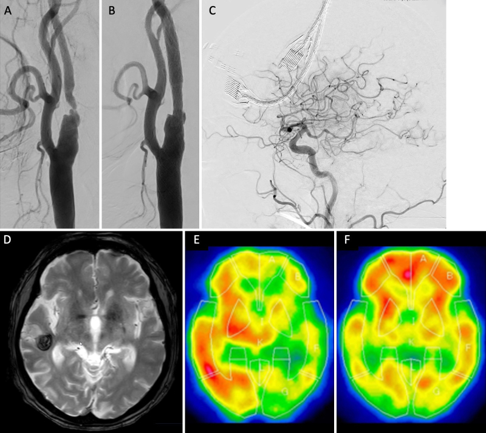
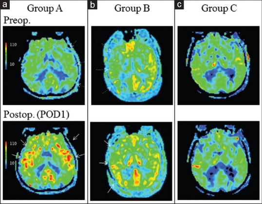
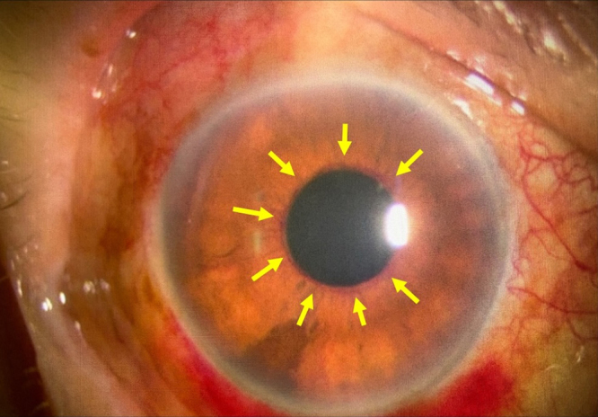
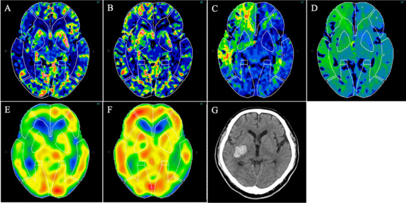

271 — Hội chứng tăng tưới máu não sau can thiệp cảnh / Cerebral hyperperfusion syndrome (CHS) after carotid revascularization
Tags: pattern:tang-tuoi-mau-cua pattern:phu-nao-vung pattern:xuat-huyet-nao vung:nao vung:dong-mach-canh vung:mat score:Bouri protocol:CTP protocol:ASL protocol:TCD protocol:MRI-so-nao protocol:CTA-co-can-quang
Mức chắc chắn (certainty): tổng hợp y văn (literature synthesis) — 1 tổng quan kỹ thuật TCD có bảng ngưỡng (Front Neurol 2023, PMC10423829, CC BY), 1 phân tích gộp 158.624 người (Arch Med Sci 2025, PMC12703609, CC BY-NC-SA), 1 ca + tổng quan hệ thống về CHS khi huyết áp thấp (Life 2024, PMC11595517, CC BY), 1 nghiên cứu ASL 32 ca sau bóc nội mạc cảnh (Surg Neurol Int 2016, PMC5234294, CC BY-NC-SA), 1 nghiên cứu CTP dự báo 46 ca (Acta Neurochir 2025, PMC12106584, CC BY), 1 ca CHS muộn 15 ngày (Ann Afr Med 2026, PMC13638182, CC BY-NC-SA), 1 ca động kinh liên tục (Cureus 2021, PMC8776524, CC BY) và 1 ca CHS che lấp glôcôm tân mạch (J Neurosurg Case Lessons 2025, PMC12749092, CC BY-NC-ND). Không có ca nguyên văn của nhóm — 3 ca trong quiz là ca công bố, lấy nguyên văn từ bài gốc.
Câu chốt: CHS không phải "chảy máu do ống thông" mà là mất tự điều hòa mạch não sau khi mở hẹp — máu tuôn vào vùng vừa được tái thông tỷ lệ thuận với huyết áp, làm phù vận mạch rồi vỡ mao mạch. Ba con số phải thuộc: CHS sau bóc nội mạc cảnh (CEA) 1,9% và sau đặt stent (CAS) 1,16–1,2%; xuất huyết não (ICH) do tăng tưới máu 0,37% sau CEA và 0,51–0,74% sau CAS; khi đã có ICH, tử vong 40–75%. Và một bẫy: tăng tưới máu KHÔNG triệu chứng gặp tới 12,5% sau CEA (68,8% nếu tính cả hai bên trên ASL) — hình ảnh tăng tưới máu một mình không phải là hội chứng.
1. Tổng quan bệnh học – cơ chế hình ảnh
1.1 Bệnh học: mạch máu mất khả năng CO LẠI, không phải "máu nhiều"
- Trong hẹp cảnh mạn tính, áp lực tưới máu phía sau hẹp giảm → tiểu động mạch giãn tối đa để giữ lưu lượng (cơ chế tự điều hòa, autoregulation). Giãn tối đa kéo dài → rối loạn chức năng nội mô và mất trương lực co của tiểu động mạch.
- Khi mở hẹp (CEA/CAS), áp lực đột ngột tăng nhưng mạch không co lại được → lưu lượng não (CBF) tuyến tính với huyết áp động mạch thay vì hằng định. Đây là lý do kiểm soát huyết áp là biện pháp duy nhất có bằng chứng và cũng là lý do hạ huyết áp làm hết triệu chứng.
- Chuỗi mô học: áp lực mao mạch tăng → vỡ hàng rào máu–não (BBB) → dịch giàu protein thoát ra khoảng kẽ = phù vận mạch (vasogenic edema) → nếu áp lực tiếp tục tăng: xuất huyết điểm (petechiae) ở điểm nối chất xám–chất trắng rồi xuất huyết ổ (ICH).
- Vì sao ICH hay ở hạch nền – thùy thích (temporal) – đồi thị: các nhánh xuyên sâu chịu áp lực trực tiếp, ít được "bảo vệ" bởi trương lực giao cảm của hệ thần kinh tự chủ trên thành mạch vỏ não; vùng chia nước (watershed) là nơi giãn mạch tối đa nhiều nhất trước mổ. Hai ca trong bài này vỡ đúng hạch nền phải và thùy thích phải (xem quiz) — đây là suy luận cơ chế, không phải số liệu đo.
1.2 Vì sao hình ảnh trông như vậy (vật lý ASL – CTP – DWI)
- ASL (arterial spin labeling): dùng nước trong máu động mạch được đánh dấu từ tính làm chất đánh dấu nội sinh; sau thời gian chờ (post-labeling delay, PLD) chụp ảnh não. Tín hiệu tăng = nhiều nước "đã đánh dấu" đến trong thời gian PLD = lưu lượng tăng, không phải rò thuốc. Vì không cần thuốc cản quang, ASL lặp lại được ngay tại giường để theo dõi — đúng nhu cầu CHS (diễn tiến vài giờ đến vài ngày). Nghiên cứu 32 ca sau CEA: ngày 1 sau mổ (POD1) 22/32 (68,8%) tăng tín hiệu HAI BÊN, 4/32 (12,5%) tăng một bên, 6/32 (18,8%) không đổi; 3 ca (9,4%) có CHS lâm sàng; tín hiệu hết sau 8–14 ngày.
- CTP (CT perfusion): theo nguyên lý thể tích trung tâm, CBF = CBV / MTT. Trước mổ, vùng "kiệt dự trữ" có CBV tăng (giãn mao mạch bù) và MTT/TTP kéo dài; đây là dấu hiệu dự báo chứ không phải chẩn đoán. Sau mổ, tăng tưới máu thật biểu hiện CBF/CBV tăng, MTT/TTP NGẮN lại — ngược hoàn toàn với thiếu máu (MTT/TTP dài, CBF giảm).
- DWI/ADC: phù vận mạch là dịch ngoài tế bào → khuếch tán không bị hạn chế (DWI không sáng, ADC tăng). Vì vậy DWI âm không loại trừ tổn thương — nó loại trừ nhồi máu mới. Ca CHS muộn 15 ngày: FLAIR tăng tín hiệu vùng thùy thích–đỉnh, không hạn chế khuếch tán, không xuất huyết, hồi phục hoàn toàn trên MRI sau 2 tháng.
- T2/FLAIR: phù vận mạch giàu nước tự do → tăng tín hiệu, xóa rãnh não (sulcal effacement), không theo lãnh thổ mạch (khác nhồi máu), thường lan ra cả chất trắng dưới vỏ.
- SWI/GRE: xuất huyết điểm dạng "rắc tiêu" ở điểm nối xám–trắng là dấu sớm của vỡ BBB, xuất hiện trước khi CT thấy máu.
1.3 Dịch tễ và thời điểm — ngưỡng định lượng
| Biến số | Số liệu | Nguồn |
|---|---|---|
| CHS sau CEA (13 nghiên cứu, 4.689 ca) | 1,9%; tăng tưới máu không triệu chứng 12,5%; ICH 0,37% | PMC10423829 |
| CHS sau CAS (9 nghiên cứu, 4.446 ca) | 1,16%; ICH 0,74% | PMC10423829 |
| CHS sau CAS, gộp 33 nghiên cứu > 8.000 ca | 4,6%, thời gian từ thủ thuật đến triệu chứng trung bình 12 giờ | PMC11595517 |
| CHS sau CAS, trung bình gia quyền 65 bài | 1,2% (0,0–37,7%); ICH 0,51% (0–9,3%) | PMC11595517 |
| Tử vong khi CHS có ICH | 40–75%; khoảng 30% sống sót còn di chứng | PMC11595517, PMC8776524 |
| Thay đổi huyết áp sau CEA | ~2/3 bệnh nhân trong 24 giờ đầu; tăng HA sau mổ tới 56% | PMC11025470 |
| CHS sau CEA HAI BÊN | 2,2%, tất cả có xuất huyết trong 30 ngày | PMC11025470 |
- Thời điểm: đa số trong tuần đầu (thường 24–72 giờ), nhưng tiêu chuẩn Bouri tính trong 30 ngày; đã có ca khởi phát ngày 15. Vì vậy theo dõi huyết áp không được dừng ở ngày 3.
- Yếu tố nguy cơ (phân tích gộp 10 nghiên cứu, 158.624 người): đái tháo đường OR 3,16; tiền sử đột quỵ OR 2,51; bệnh mạch vành OR 1,69; mức hẹp OR 1,08 mỗi 1%; mổ trong vòng 2 tuần sau triệu chứng OR 3,78; tuần hoàn bàng hệ tốt là yếu tố bảo vệ OR 0,20. Tăng HA sau mổ không đạt ý nghĩa trong gộp này (OR 2,81; p = 0,35) nhưng là yếu tố nguy cơ kinh điển trong các đoàn hệ (SBP > 180 mmHg).
- Vì sao mổ sớm lại nguy hiểm: não vừa bị nhồi máu mất tự điều hòa mạnh nhất; bàng hệ tốt (OR 0,20) chứng minh vai trò "giảm áp lực truyền" — điều này cũng giải thích hẹp đối bên ≥ 70% là yếu tố nguy cơ.
2. Mẫu hình + chẩn đoán phân biệt theo vị trí (gamut)
- Mẫu hình gốc: sau tái thông cảnh 0–30 ngày, bệnh nhân đau đầu dữ dội cùng bên ± động kinh cục bộ ± thiếu hụt thần kinh khu trú, hình ảnh tăng tưới máu bán cầu cùng bên ± phù ± xuất huyết. Ba thành tố lâm sàng – tưới máu – thời điểm phải khớp; thiếu một thành tố thì chưa gọi hội chứng.
Gamut theo vị trí tổn thương:
| Vị trí | Thể bệnh | Vì sao ở đó |
|---|---|---|
| Vỏ – dưới vỏ vùng chia nước (watershed) | Phù vận mạch đơn thuần, hồi phục | Nơi giãn mạch tối đa trước mổ, dễ mất tự điều hòa nhất |
| Hạch nền – đồi thị | ICH do tăng tưới máu | Nhánh xuyên sâu chịu áp lực trực tiếp, ít bảo vệ giao cảm |
| Thùy thích – thùy đỉnh | ICH + phù, hay gây bán manh | Vỏ thùy thích mỏng, nhánh xuyên dài; ca PMC12749092 vỡ thùy thích phải |
| Toàn bộ hai bán cầu | Tăng tín hiệu ASL hai bên, thường không triệu chứng | Phản ứng tăng lưu lượng toàn não sau khi bỏ hẹp; đừng đọc là bệnh |
| Hốc mắt – mắt | CHS "che lấp" glôcôm tân mạch ở bệnh nhân thiếu máu mắt | Tái thông làm tăng áp lực tưới máu mắt ở mắt đã thiếu máu mạn |
Gamut theo thời gian: < 24 giờ = tăng tưới máu (HPP) thường không triệu chứng → 1–7 ngày = đau đầu/động kinh/phù → 7–30 ngày = thể muộn (đã ghi nhận ngày 15) → sau 30 ngày không còn gọi CHS, phải tìm nguyên nhân khác.
Gợi nhớ ISCHE (5 hàng phân biệt bắt buộc): Ischemic (thuyên tắc sau CAS), Seizure-related (tăng tưới máu sau cơn), Contrast encephalopathy (bệnh não do cản quang), Hemorrhage khác nguồn (tăng HA, thuốc kháng đông), Encephalopathy (PRES, chuyển hóa).
3. Bảng so sánh phân biệt (ma trận đối chiếu)
| Thực thể (entity) | Hình ảnh điển hình | Chốt vào (rule-in) | Chốt loại (rule-out) | Gợi ý xác nhận |
|---|---|---|---|---|
| CHS — phù vận mạch | T2/FLAIR tăng tín hiệu một bán cầu cùng bên, xóa rãnh não, không theo lãnh thổ, DWI âm, ADC tăng; ASL/CTP tăng CBF cùng vùng | Đau đầu cùng bên + ASL tăng cùng bên + DWI âm trong 30 ngày sau tái thông | DWI sáng/ADC giảm → nhồi máu; tăng tín hiệu hai bên đối xứng không triệu chứng → HPP sinh lý | ASL lặp lại ngày 3–7 (phải giảm); hạ HA thì triệu chứng giảm |
| CHS — ICH do tăng tưới máu | Ổ máu hạch nền/thùy thích cùng bên, có thể kèm phù quanh; SPECT/ASL tăng tưới máu bán cầu | Máu trong nhu mô + tăng tưới máu bán cầu cùng bên + không có nguồn chảy máu khác | Máu dưới nhện đơn thuần, máu do coil/stent rách mạch, tăng HA đơn thuần không tăng tưới máu | SPECT ngày 9 (đã hết tăng) xác nhận thể tăng tưới máu; CTA loại trừ giả phình |
| Nhồi máu do thuyên tắc sau CAS | Nhiều ổ DWI sáng/ADC giảm theo lãnh thổ, không tăng ASL (hoặc giảm), thường không đau đầu | DWI dương tính + thiếu hụt khu trú không đau đầu | DWI âm + ASL tăng → không phải thuyên tắc | MRI DWI trong 24 giờ đầu; CTA/DUS kiểm tra stent |
| Tăng tưới máu sau cơn động kinh (post-ictal) | Vỏ não tăng tín hiệu ASL/CTP theo vùng vỏ của cơn, có thể phù nhẹ, DWI âm | Động kinh trước hình ảnh + tăng tưới máu khu trú vỏ | Tăng tưới máu bán cầu rộng + đau đầu cùng bên sau tái thông → CHS | EEG; ASL hết sau vài ngày; bệnh sử thời điểm |
| Bệnh não do cản quang (CIE) | CT tăng đậm độ vỏ não thoáng qua, phù lan tỏa, mù vỏ; tự hết | Triệu chứng sau bơm cản quang, CT tăng đậm độ vỏ, hết trong 24–72 giờ | Đậm độ không mất khi chụp lại → xuất huyết thật | CT lặp lại sau 24 giờ; MRI loại trừ nhồi máu |
| PRES | Phù hai bên, đối xứng, ưu thế chẩm–đỉnh, DWI âm | Hai bên + tăng HA nặng/thai sản giật/thuốc ức chế miễn dịch | Một bán cầu, sau tái thông cảnh → CHS | ASL tăng hai bên; MRI theo dõi |

Ca 74 tuổi hẹp cảnh trong phải 95% (NASCET), đặt stent ngày 0. (A–C) Chụp mạch trước/trong/sau can thiệp. (D) MRI ngày 1: ổ xuất huyết thùy thích phải (vòng tối, mũi tên). (E) SPECT ngày 1: tăng tưới máu bán cầu phải (màu nóng). (F) SPECT ngày 9: đã hết tăng tưới máu. Nguồn: Dowaki R et al., J Neurosurg Case Lessons 2025 (PMC12749092), CC BY-NC-ND 4.0 — ảnh nguyên bản, không cắt/ghép.Ba dấu hiệu chốt trên hình ảnh (đọc theo thứ tự)
- ASL/CTP tăng CBF ở bán cầu CÙNG BÊN — dấu hiệu trung tâm, nhưng phải có triệu chứng mới là hội chứng.
- Phù không theo lãnh thổ + DWI âm — phân biệt với nhồi máu; phù vận mạch có thể lan qua đường giữa (khác nhồi máu).
- Xuất huyết điểm trên SWI hoặc ổ máu hạch nền/thùy thích — bậc thang nặng lên của cùng một cơ chế, không phải biến chứng "khác".

ASL một lát cắt (PLD 1,5 giây), hàng trên trước mổ, hàng dưới ngày 1 sau mổ. (a) Nhóm A: trước mổ giảm tín hiệu bán cầu bệnh, sau mổ tăng HAI BÊN (68,8% số ca). (b) Nhóm B: tăng chỉ bán cầu được mổ (12,5%). (c) Nhóm C: không tăng (18,8%). Thang màu: xanh = thấp, đỏ = cao. Nguồn: Shimogawa T et al., Surg Neurol Int 2016 (PMC5234294), CC BY-NC-SA 4.0.4. Protocol chụp + hệ phân độ/điểm chuẩn hóa
4.1 Trước can thiệp — chọn người có nguy cơ (dự báo, không chẩn đoán)
- CTP (phương pháp ước lượng Bayes) ở bệnh nhân hẹp nặng: tỉ lệ CBV ≥ 1,085 (Se 100%, Sp 83,3%, NPV 100%); MTT ≥ 1,096 (Se 100%, Sp 76,2%); TTP ≥ 1,098 (Sp 100%); CBF ≤ 0,900 (Se 75%, Sp 83,3%). Trong 46 ca, nhóm tăng tưới máu có CBV 1,25 vs 1,02 (p = 0,001), MTT 1,31 vs 1,05 (p = 0,003), TTP 1,10 vs 1,02 (p = 0,011). Lưu ý: sau hiệu chỉnh đa so sánh, ý nghĩa mất (p hiệu chỉnh 0,07) — dùng như tín hiệu, không phải tiêu chuẩn.
- SPECT nghỉ + acetazolamide (nếu có): chỉ số bất đối xứng trước mổ AI ≤ 0,937 dự báo tăng tưới máu (Se 100%, Sp 71,4%).
- ASL làm đường cơ sở nếu máy MRI sẵn có — rẻ hơn SPECT và lặp lại được.
4.2 Sau can thiệp — theo dõi và ngưỡng xử trí
- Huyết áp: mục tiêu **< 140/90 mmHg**; nhóm nguy cơ cao (hẹp > 90%, hẹp đối bên ≥ 70%, nhồi máu gần đây, bàng hệ kém) < 120/80 mmHg**; tránh **SBP > 180 mmHg; phác đồ sau CAS của một trung tâm giữ SBP 110–140 mmHg bằng nicardipine, đo mỗi giờ trong 24 giờ đầu, mỗi 4 giờ ngày 2–3, sau đó 3 lần/ngày; duy trì đến khi CBF bình thường trên ASL/SPECT.
- TCD: tăng vận tốc trung bình ĐM não giữa (MCA) > 100% so với trước mổ là định nghĩa huyết động kinh điển, nhưng PPV chỉ 8–18% khi đo trong mổ; đo 1 giờ sau có PPV cao hơn > 3 lần; đo 24 giờ: nếu tăng < 100% thì NPV 99% (gần như loại trừ CHS). Chỉ số vận tốc–huyết áp VBI ≥ 2: Se 83,3%, PPV 62,5%. Không có cửa sổ thái dương ở 10–15% bệnh nhân.
- Khi có triệu chứng: CT không cản quang trước (loại trừ máu, phù) → CTA (stent thông? giả phình? bóc tách?) → MRI DWI + FLAIR + SWI + ASL → CTP/SPECT nếu còn phân vân. Không chờ đủ bộ xét nghiệm mới hạ huyết áp.
4.3 Tiêu chuẩn Bouri 2011 (4 điều kiện, dùng để gọi "hội chứng")
- Xảy ra trong 30 ngày sau CEA/CAS.
- Bằng chứng hình ảnh tăng tưới máu (ASL/CTP/SPECT/TCD) hoặc phù/xuất huyết phù hợp.
- Triệu chứng mới: đau đầu, động kinh, liệt nửa người, GCS < 15.
- Loại trừ nhồi máu mới, tắc mạch cảnh, nguyên nhân chuyển hóa/sinh lý khác.
flowchart TD A[Đau đầu / động kinh / thiếu hụt trong 30 ngày sau CEA-CAS] --> B[CT không cản quang] B -->|Máu trong nhu mô| C[ICH do tăng tưới máu: hạ HA, theo dõi, cân nhắc phẫu thuật] B -->|Không máu, có phù| D[MRI: DWI + FLAIR + SWI + ASL] B -->|Bình thường| D D -->|DWI sáng, ADC giảm| E[Nhồi máu thuyên tắc: CTA kiểm stent, chống kết tập] D -->|DWI âm, ASL tăng cùng bên| F[CHS: hạ HA dưới 140-90, đo mỗi giờ] D -->|ASL tăng hai bên, không triệu chứng| G[HPP sinh lý: theo dõi, không điều trị] F --> H[ASL lặp ngày 3-7: tín hiệu phải giảm] H -->|Còn tăng| I[Tiếp tục kiểm soát HA, tìm nguyên nhân khác]
5. Biến thể bình thường và cạm bẫy
- Tăng tín hiệu ASL hai bên là bình thường sau CEA (68,8%) — phản ứng tăng lưu lượng toàn não, không phải CHS. Chỉ gọi CHS khi có triệu chứng; tăng tín hiệu một bên (12,5%) cũng thường không triệu chứng.
- ASL tăng tín hiệu không tương quan với tình trạng huyết động trước mổ (p = 0,2062 trong 32 ca) → không dùng ASL trước mổ để "tiên lượng chắc chắn", và không suy ra "không tăng thì không nguy cơ".
- Ổ nhồi máu CŨ hiện thành "khuyết tưới máu" nằm trong bán cầu đang tăng tưới máu — trên ASL, vùng nhồi máu cũ tương phản rõ vì nền xung quanh sáng lên; đừng gọi là nhồi máu mới (ca 23 của PMC5234294).
- Huyết áp thấp KHÔNG loại trừ CHS: ca 67 tuổi huyết áp bình thường, tụt HA sau CAS vẫn mắc CHS (phù + phục hồi hoàn toàn). Cơ chế gồm rối loạn chức năng nội mô và tái tưới máu đột ngột, không chỉ tăng HA.
- CHS muộn: khởi phát ngày 15 với động kinh cục bộ toàn hóa, FLAIR tăng tín hiệu không hạn chế khuếch tán; hạ HA xuống < 120/70 thì bán manh hết trong 3 ngày, MRI sạch sau 2 tháng. Đừng đóng hồ sơ theo dõi sau ngày 3.
- Bẫy "đậm độ trên CT": cản quang tồn tại (contrast staining) sau can thiệp gây tăng đậm độ vỏ não và tự mất trong 24–72 giờ; chụp CT lặp lại trước khi kết luận xuất huyết.
- Bẫy "động kinh do CHS" hay "CHS do động kinh": cả hai cùng tồn tại — cơn động kinh làm tăng tưới máu, và tăng tưới máu gây cơn. Chốt bằng thời điểm so với can thiệp + ASL bán cầu cùng bên + hết sau hạ HA, không bằng một lần chụp.
- Cạm bẫy mặt cắt: phù vận mạch lan qua đường giữa và qua bao trong (không theo lãnh thổ); nhồi máu dừng ở ranh giới lãnh thổ. Trên CT, phù xóa rãnh não nhưng không xóa bể đáy ở thể nhẹ — đừng chờ dấu hiệu muộn.
- Mắt: ở bệnh nhân thiếu máu mắt (OIS) hoặc đã mổ đục thủy tinh thể, tái thông cảnh có thể làm glôcôm tân mạch bùng phát và mù không hồi phục trong khi CHS được kiểm soát; đau đầu kéo dài sau khi HA đã ổn phải soi đèn khe tìm tân mạch mống mắt (rubeosis iridis) — khám mắt trước và sau can thiệp.

Cùng bệnh nhân với ảnh trên: ngày 10 sau CAS, đèn khe thấy mạch máu nhỏ li ti trên mặt trước mống mắt (mũi tên) = rubeosis iridis, tiến triển thành glôcôm tân mạch, thị lực mất không hồi phục dù CHS đã ổn định. Nguồn: Dowaki R et al., J Neurosurg Case Lessons 2025 (PMC12749092), CC BY-NC-ND 4.0.6. Tự lượng giá — Blind Quiz
Ca 1 — Nam 74 tuổi, hẹp cảnh trong phải 95% (NASCET), đặt stent. Ngày 1: đau đầu dữ dội bên phải.
- Gợi ý lâm sàng: trước mổ có phù võng mạc do thiếu máu và vài ổ DWI rải rác bán cầu phải; sau can thiệp huyết áp được kiểm soát.
- Câu hỏi: (1) Ổ bất thường ở thùy thích phải trên T2 là gì? (2) SPECT ngày 1 và ngày 9 nói gì? (3) Ba chẩn đoán phân biệt và dấu hiệu chốt?
Bấm để hiện đáp án (findings + chẩn đoán)
- Findings: (D) ổ giảm tín hiệu có viền ở thùy thích phải = xuất huyết trong nhu mô; (E) SPECT ngày 1 tăng tưới máu bán cầu phải; (F) SPECT ngày 9 đã hết.
- Chẩn đoán: CHS có ICH do tăng tưới máu — phù/xuất huyết xảy ra vì mạch mất khả năng co sau khi mở hẹp, lưu lượng tỉ lệ với huyết áp.
- Phân biệt: nhồi máu thuyên tắc (DWI sáng, ASL giảm), ICH do tăng HA đơn thuần (không tăng tưới máu bán cầu), vỡ mạch do dụng cụ (CTA có giả phình).
- Điểm "ăn tiền": ảnh ngày 9 hết tăng tưới máu là bằng chứng hồi phục tự điều hòa — động lực học quan trọng hơn một lần chụp.
- Diễn biến dạy học: ngày 10 xuất hiện tân mạch mống mắt, glôcôm tân mạch, mù không hồi phục — CHS ổn định không bảo vệ được mắt.
- Nguồn: Dowaki R et al., J Neurosurg Case Lessons 2025 (PMC12749092), CC BY-NC-ND 4.0.
Ca 2 — Bệnh nhân bóc nội mạc cảnh (CEA). So sánh ASL trước mổ và ngày 1.
- Gợi ý: bệnh nhân không có thiếu hụt mới; DWI ngày 1 không thấy ổ nhồi máu mới.
- Câu hỏi: (1) Nhóm (a), (b), (c) khác nhau ở đâu? (2) Có phải tất cả đều là CHS? (3) Theo dõi tiếp thế nào?
Bấm để hiện đáp án (findings + chẩn đoán)
- Findings: (a) trước mổ giảm tín hiệu bán cầu bệnh, sau mổ tăng cả hai bên; (b) tăng chỉ bán cầu mổ; (c) không tăng.
- Chẩn đoán: tăng tưới máu (hyperperfusion phenomenon) — chỉ 3/32 ca (9,4%) có hội chứng lâm sàng; 68,8% tăng hai bên và 12,5% tăng một bên nhưng không triệu chứng.
- Bài học: hình ảnh tăng tưới máu ≠ CHS; chẩn đoán cần triệu chứng + thời điểm. Tín hiệu tự hết sau 8–14 ngày.
- Theo dõi: hạ HA theo ngưỡng, ASL lặp lại; nếu xuất hiện đau đầu/động kinh → chuyển sang phác đồ CHS.
- Nguồn: Shimogawa T et al., Surg Neurol Int 2016 (PMC5234294), CC BY-NC-SA 4.0.
Ca 3 — Nam 65 tuổi hẹp cảnh trong phải, CTP trước can thiệp, rồi đặt stent. Ngày 3: liệt nửa người trái.

- Gợi ý: trước mổ CTP cho CBF 0,83; CBV 1,24; MTT 1,31; TTP 1,10; SPECT nghỉ AI 0,88; sau mổ AI 1,17.
- Câu hỏi: (1) Bản đồ nào là CBV, bản đồ nào là MTT? (2) Tổ hợp CTP trước mổ nói gì về nguy cơ? (3) Ngày 3 trên CT là gì và vì sao đúng dự báo?
Bấm để hiện đáp án (findings + chẩn đoán)
- Findings: (A) CBF giảm bán cầu phải; (B) CBV tăng; (C) MTT kéo dài; (D) TTP tăng; (E) SPECT trước mổ giảm (AI 0,88); (F) SPECT sau mổ tăng (AI 1,17); (G) CT ngày 3: ổ máu hạch nền phải.
- Chẩn đoán: tăng tưới máu (HPP) dự báo trước mổ → CHS có ICH ngày 3. Tổ hợp CBV tăng + MTT/TTP kéo dài = mạch đã giãn tối đa, kiệt dự trữ; ngưỡng CBV ≥ 1,085 có NPV 100% trong loạt này.
- Vì sao đúng dự báo: mạch không còn khả năng co → sau khi mở hẹp, áp lực truyền thẳng vào nhánh xuyên sâu hạch nền → vỡ.
- Phân biệt: nhồi máu hạch nền (DWI sáng, không tăng tưới máu), ICH do tăng HA (không có kiểu CTP này).
- Nguồn: Yamamoto H et al., Acta Neurochir 2025 (PMC12106584), CC BY 4.0.
Bài liên quan chéo
- 270 – Carotid web (nguyên nhân đột quỵ ở người trẻ; cùng bàn về "hai lòng" trên CTA)
- 260 – Hẹp động mạch cảnh do xạ (hẹp nặng, can thiệp, nguy cơ tái hẹp)
- 211 – Đột quỵ não (DWI/ADC, lãnh thổ mạch)
- 234 – Tăng áp lực nội sọ theo dõi đa phương thức
- 262 – Bệnh mạch máu lớn do xạ trị não (hẹp mạn, bàng hệ, nguy cơ tái tưới máu)
- 444 – Tắc mạch võng mạc (thiếu máu mắt — nền của glôcôm tân mạch sau tái thông)
- 1782 – Phình mạch trong moyamoya (tăng tưới máu sau bypass)
Ảnh
271_chs_MRI-SPECT_PMC12749092.jpg— MRI T2 + SPECT ngày 1 và ngày 9, ca CHS có ICH thùy thích. CC BY-NC-ND 4.0 (nguyên bản).271_chs_ruoi-mat_PMC12749092.jpg— đèn khe ngày 10: tân mạch mống mắt. CC BY-NC-ND 4.0 (nguyên bản).271_chs_ASL-CEA_PMC5234294.jpg— ASL trước/sau CEA ở 3 nhóm. CC BY-NC-SA 4.0.271_chs_CTP_PMC12106584.jpg— CTP trước CAS + SPECT + CT ngày 3. CC BY 4.0.- Không tạo ảnh ghép cho bài này: 2 trong 4 ảnh là CC BY-NC-ND (không được tạo tác phẩm phái sinh); các ảnh còn lại khác bệnh nhân/chuỗi xung nên ghép sẽ sai nguyên tắc "cùng chuỗi xung đặt cạnh nhau".
Không dùng để chẩn đoán độc lập khi chưa có người hướng dẫn.